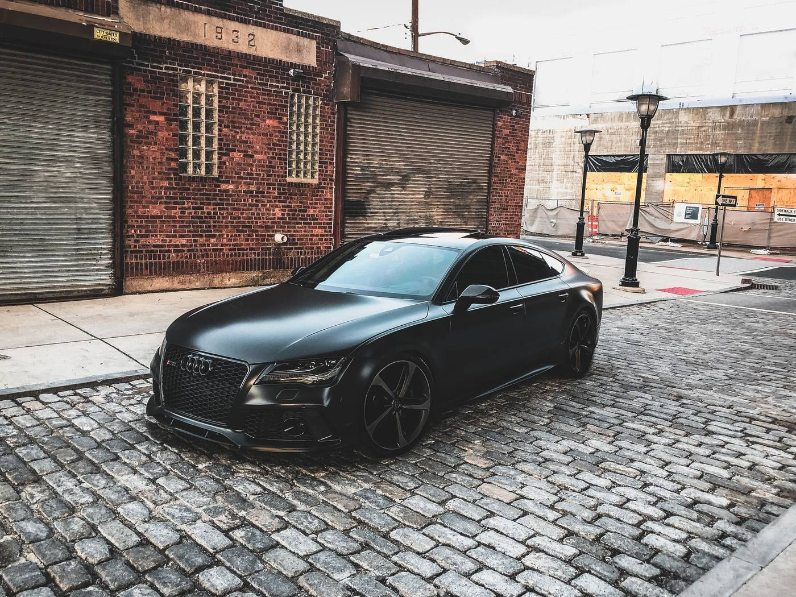

Arrival and agreement
The car comes in, the paint is looked at in good light, and the work is agreed in writing before anything is sprayed or machine-polished. If the package needs to change, that happens at this point — not halfway through the day.
